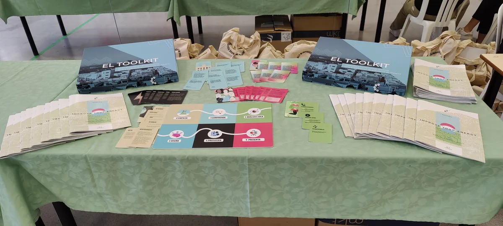
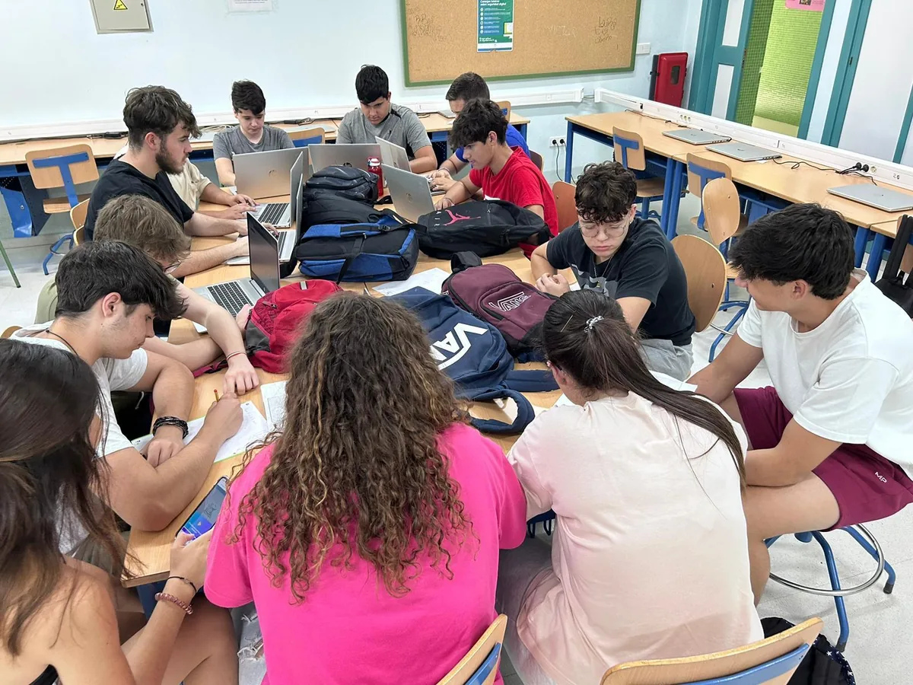
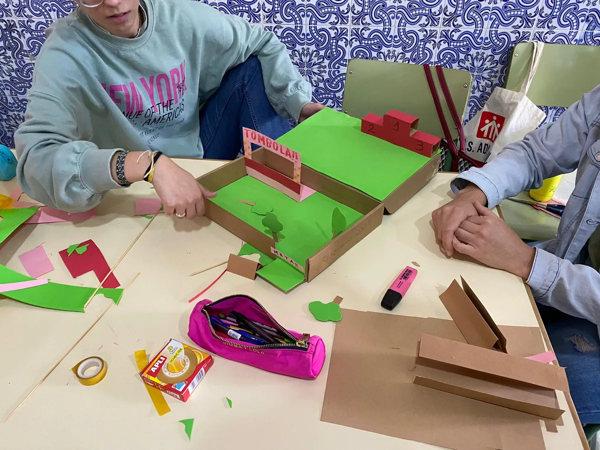
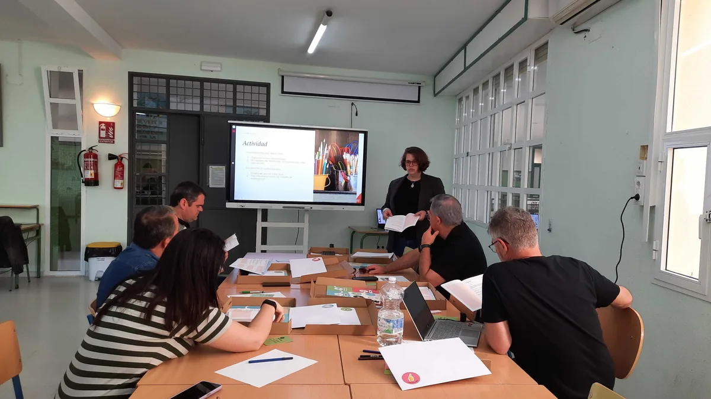
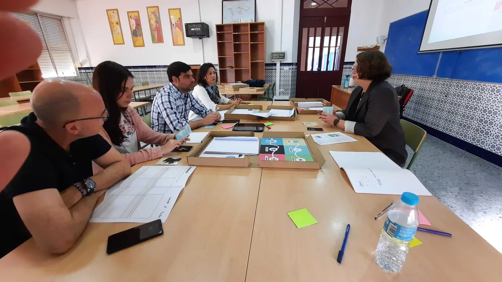
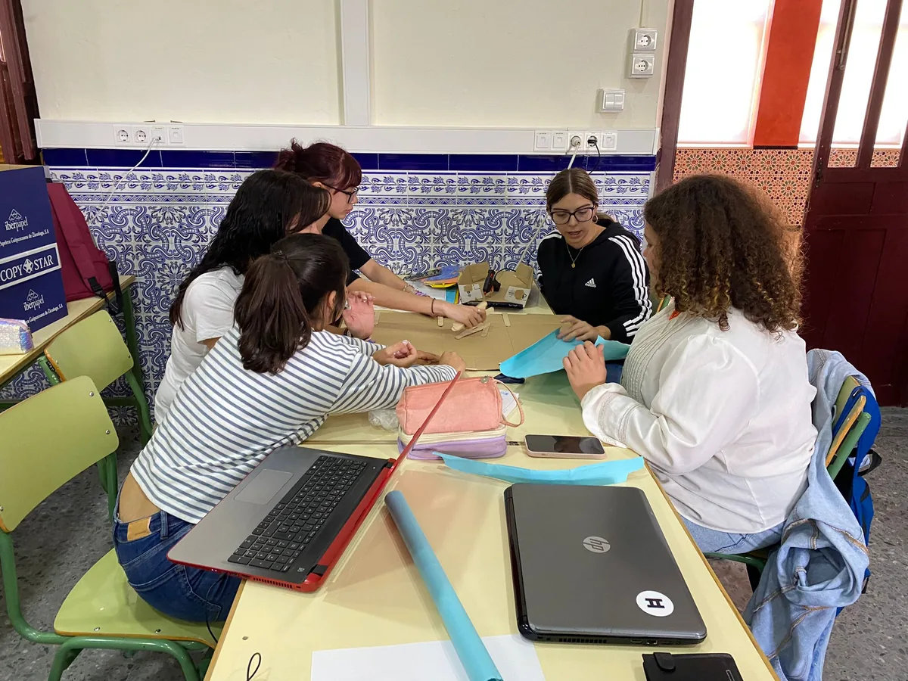
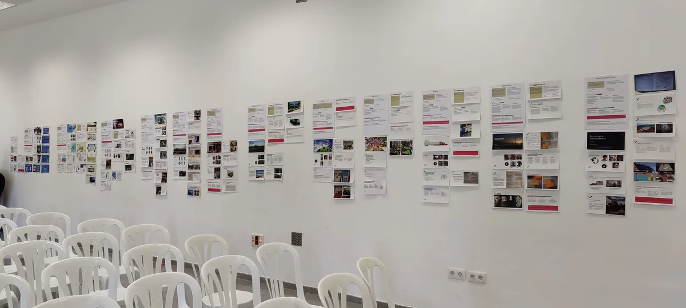
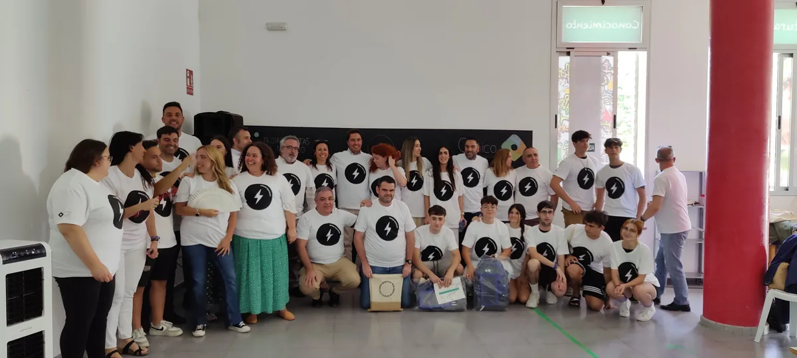

Contexto
En colaboración con Fruta, consultora especializada en diseño para la sostenibilidad, y Cubico Iberia, empresa líder en inversiones sostenibles, desarrollamos un programa piloto de responsabilidad social corporativa (RSC) en Morón de la Frontera, Sevilla.
El objetivo era fortalecer el vínculo entre educación, sostenibilidad y energía renovable, empoderando a jóvenes para que se conviertan en agentes de cambio en sus comunidades. Este programa buscaba no solo educar sobre sostenibilidad, sino dar a los estudiantes herramientas reales de diseño para identificar y resolver problemas locales.
El proyecto se desarrolló en dos colegios de la zona, trabajando tanto con estudiantes de ESO (Educación Secundaria Obligatoria) como de Formación Profesional, cada uno con necesidades y contextos diferentes.
El Desafío
Diseñar e implementar un programa educativo que integrara innovación, sostenibilidad y energía, dirigido a estudiantes de secundaria y formación profesional. El reto consistía en crear una metodología participativa que permitiera a los jóvenes identificar y resolver problemas sociales y ambientales locales, fomentando su compromiso con el desarrollo sostenible.
Mi Rol en el Proyecto
Como Service Designer en Fruta, trabajé durante 5 meses en este proyecto, siendo parte de un equipo multidisciplinario de 4 personas.
Mis responsabilidades incluyeron:
- Liderar la conceptualización del programa educativo basado en Design Thinking
- Co-diseñar y facilitar 4 workshops presenciales iniciales con jóvenes de la comunidad para entender problemáticas locales
- Diseñar y facilitar 2 talleres presenciales por colegio para formar a los docentes
- Coordinar 4 sesiones digitales con estudiantes de los colegios
- Adaptar metodologías de diseño centrado en las personas al contexto educativo
- Diseñar herramientas pedagógicas (tablero de juego interactivo, materiales visuales)
- Coordinar con docentes, estudiantes y representantes institucionales
- Facilitar la implementación del programa en el currículo escolar
Enfoque y Proceso
Diseñamos un proceso participativo basado en Design Thinking, adaptado específicamente para el contexto educativo y las necesidades de jóvenes en formación. El programa se estructuró en fases progresivas que permitieron a los estudiantes pasar de la observación a la acción.
1. Discovery con la Comunidad
Entender el contexto y las problemáticas reales:
- 4 workshops presenciales con jóvenes de Morón de la Frontera
- Exploración de desafíos locales relacionados con sostenibilidad y energía
- Identificación de necesidades y oportunidades en la comunidad
- Construcción de empatía con los problemas ambientales del entorno
- Definición de los retos que los estudiantes abordarían posteriormente
2. Formación de Docentes (Co-diseño con Actores Locales)
Capacitar a los profesores en metodologías de diseño:
- 2 talleres presenciales por colegio (4 talleres totales)
- Formación en Design Thinking y diseño centrado en las personas
- Co-creación de contenidos adaptados al currículo
- Sesiones de formación práctica con las herramientas pedagógicas
- 12 docentes formados en total
3. Desarrollo de Herramientas Pedagógicas
Creación de recursos interactivos para el aula:
- Diseño de un tablero de juego interactivo que guiaba a los estudiantes a través de las fases del proceso de diseño
- Materiales visuales que fomentaban la creatividad y el pensamiento crítico
- Herramientas adaptadas para ESO y Formación Profesional
- Recursos descargables para los docentes
4. Implementación en el Aula
Puesta en marcha del programa con estudiantes:
- 4 sesiones digitales con estudiantes de ambos colegios
- 85 estudiantes participantes (ESO y Formación Profesional)
- Trabajo en equipos para identificar desafíos locales
- Desarrollo de soluciones sostenibles concretas
- Integración del programa en el currículo escolar
5. Presentación y Evaluación
Cierre y seguimiento del programa:
- 12 proyectos desarrollados y presentados
- Evaluación de soluciones propuestas por los estudiantes
- Selección del proyecto ganador
- Implementación del proyecto ganador con beneficios tangibles para la comunidad
- Mecanismos de seguimiento para evaluar el impacto
Adaptación de Design Thinking
Todo el programa fue una adaptación cuidadosa de la metodología de pensamiento de diseño (Design Thinking) al contexto educativo. No se trató simplemente de "enseñar" Design Thinking, sino de crear una experiencia donde los jóvenes vivieran el proceso completo:
🔍 Empatizar
Los workshops iniciales con la comunidad permitieron a los estudiantes comprender problemas reales de su entorno, no problemas abstractos o teóricos.
🎯 Definir
Con las herramientas pedagógicas, los equipos aprendieron a sintetizar información y enfocar sus esfuerzos en problemas específicos y accionables.
💡 Idear
El tablero de juego interactivo facilitaba sesiones de ideación colaborativa, fomentando la creatividad sin perder el foco en la sostenibilidad.
🛠️ Prototipar
Los estudiantes desarrollaron prototipos tangibles de sus soluciones, aprendiendo sobre iteración y mejora continua.
🧪 Testear
Las presentaciones finales funcionaron como momentos de validación, donde recibieron feedback de docentes, pares y representantes de Cubico.
La Gestión del Proyecto
Un programa de responsabilidad social con dos centros educativos, doce equipos de estudiantes y un concurso con jurado, ejecutado en un municipio al que el equipo viajaba. La parte de diseño está más arriba; esto es la maquinaria que lo hizo ocurrir en fecha.
1. El compromiso, firmado antes de empezar
Cada centro educativo firmó un acuerdo de participación antes del arranque: cuántos alumnos entraban, en qué curso y dentro de qué asignatura se integraba el programa, las fechas de formación del profesorado y del challenge, el tamaño de los grupos, la dedicación mínima semanal y qué materiales aportábamos nosotros. Un programa que depende de profesores que no te reportan no se sostiene sobre el entusiasmo de la primera reunión, sino sobre un documento firmado que dice quién pone qué.
2. Una escaleta minuto a minuto, para que la ejecute otro
Las sesiones no las dábamos nosotros: las daban los profesores de cada centro. Así que el contenido se entregó como una escaleta minuto a minuto, con cada bloque detallado en su hora de inicio, su duración, el tema, la descripción de la actividad, los materiales necesarios y el resultado esperado de ese tramo, más enlaces a vídeos explicativos por actividad. Diseñar para que lo ejecute otra persona obliga a un nivel de detalle que diseñar para ejecutarlo tú no exige nunca.
3. Las reglas del concurso, publicadas antes de competir
Las condiciones de aceptación se cerraron y se comunicaron antes de que nadie entregara nada: qué problemáticas valían, el plazo, qué entregables se pedían, quién podía inscribirse, y las condiciones de fondo que toda solución debía cumplir —implementable en menos de seis meses, con energías renovables como parte central, con impacto social y ambiental en la localidad, novedosa en su enfoque, y construida con la metodología enseñada—. Escribir las reglas antes ahorra discutirlas después, cuando ya hay un ganador.
4. Un sistema de puntuación ponderado, no una votación
El jurado eran siete personas de cinco organizaciones distintas: la empresa, el ayuntamiento, el tejido local, los dos centros educativos y la consultora. Un grupo así no llega a una decisión defendible votando a mano alzada. Se construyó una hoja de evaluación con siete criterios ponderados —impacto social, impacto ambiental, originalidad, factibilidad desdoblada en implementabilidad, tiempo y presupuesto, relación con el reto energético, y deseabilidad para la comunidad—, cada uno puntuado de 1 a 5 sobre una rúbrica escrita. Cada miembro evaluaba por separado dentro de una ventana acotada, y el resultado salía de la media ponderada.
5. Presupuesto, proveedores y logística del cierre
El programa cerraba con un evento de premiación presencial, y eso trae su propia gestión: presupuestos comparados entre proveedores, catering, espacio, y los desplazamientos del equipo. Un proyecto de responsabilidad social corporativa se juzga también por cómo se ve el día que lo ven el cliente y el municipio entero.
6. El calendario, construido hacia atrás
Todo el plan se ancló en la fecha del evento de premiación y se construyó desde ahí hacia atrás: primero la premiación, antes la ventana de evaluación del jurado, antes la entrega de los trabajos, antes las cuatro semanas de trabajo de los equipos, antes la formación del profesorado, y antes de todo la firma de los acuerdos. Cuando la fecha final es inamovible porque hay un acto público convocado, es la única forma de planificar que no miente.
Resultados
Impactos específicos:
- Formación de 12 docentes en metodologías de diseño centrado en las personas
- Participación activa de 85 estudiantes de ESO y Formación Profesional
- Desarrollo y presentación de 12 proyectos enfocados en soluciones sostenibles
- Implementación del proyecto ganador, con beneficios tangibles para la comunidad local
- Integración del programa en el currículo escolar de ambos colegios
- Fortalecimiento del compromiso de jóvenes con el desarrollo sostenible de su comunidad
- Herramientas pedagógicas reutilizables para futuras ediciones del programa
Reflexiones
El poder del diseño estratégico y participativo para generar impacto social.
Este proyecto reafirmó mi convicción sobre el poder del diseño estratégico y participativo para generar impacto social. Fue inspirador ver cómo, a través de herramientas adecuadas y un enfoque colaborativo, los jóvenes pueden convertirse en protagonistas del cambio en sus comunidades.
Trabajar con docentes fue especialmente enriquecedor: no se trataba solo de entregarles un "kit" pedagógico, sino de co-crear con ellos, respetando su conocimiento del contexto educativo y adaptando nuestras metodologías a sus realidades. Ver cómo abrazaban el Design Thinking y lo hacían suyo fue uno de los mayores logros del proyecto.
Además, fortaleció mi habilidad para adaptar metodologías de diseño a contextos educativos y culturales diversos. Aprendí que diseñar para educación no es solo crear contenidos, sino crear experiencias que transformen la forma en que jóvenes y docentes se relacionan con los problemas de su entorno.
Ver el proyecto ganador implementarse y generar beneficios reales en Morón de la Frontera fue la confirmación de que cuando empoderamos a las personas con herramientas de diseño, no solo resuelven problemas: crean futuros posibles.
Recursos Visuales
Toolkit para el reto
Herramientas pedagógicas diseñadas para guiar a los estudiantes a través de las fases del Design Thinking.

Tablero y tarjetas para el proceso de diseño
Workshops con la Comunidad
Sesiones iniciales de discovery con jóvenes de Morón de la Frontera.

Primer workshop con jóvenes

Sesión de ideación colaborativa
Formación de Docentes
Talleres presenciales con profesores para capacitarlos en Design Thinking.

Taller con profesores - Colegio 1

Taller con profesores - Colegio 2
Estudiantes en Acción
Jóvenes desarrollando sus proyectos de sostenibilidad.

Equipos trabajando en prototipos

Presentación de proyectos finales

Grupos ganadores en el Reto Improve Your Energy
Más información sobre el reto
Si quieres aprender más sobre lo que hicimos con la comunidad de Morón de la Frontera puedes leer nuestro libreto
Descargar libreto